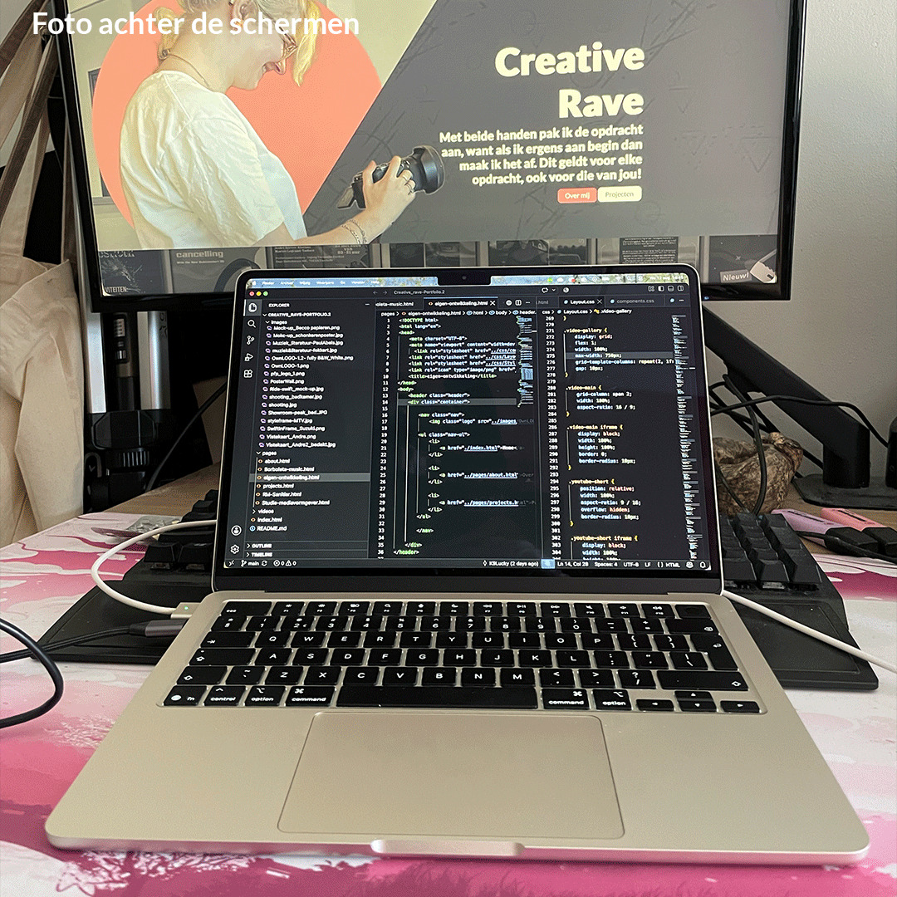

Mijn ontwikkeling
Een overzicht van bijzondere projecten en unieke ontwikkelingen door de jaren heen.
Benieuwd naar het proces? Bekijk dan mijn aanpak voordat je verder scrolt.
Bekijk de processenGrafisch werk
Om mezelf bezig te houden, maak ik met foto's van auto's die ik zelf heb gemaakt of vakantiefoto's met een auto, carposters.
Voor vrienden heb ik al enkele autoposters gemaakt waar ik ook trots op ben.
Klik op de afbeelding om deze groter te bekijken.


Fotografie
Ik heb me veel beziggehouden met fotografie in mijn vrije tijd. Dit heb ik gedaan omdat ik de camera beter wil leren kennen en nieuwe dingen wil proberen.
Hierom heb ik me veel beziggehouden met autofotografie, koppel- en soloshoots, maar ook een korte periode met irisfotografie. Daarnaast heb ik op verzoek van een vriendin een bruiloft gefotografeerd.


Multimedia
Op dit moment is dit de enige video die ik buiten mijn andere projecten om heb gemaakt, maar ik ben blij met het resultaat van de Yu-Man-Race.
Eigen portfoliosite
Ik heb deze website zelf ontworpen en gebouwd, met wat hulp van Google, YouTube en Max Nijenkamp . Ik heb dit gedaan om mijn vaardigheden te prikkelen en te verbeteren en om een plek te hebben waar ik mijn werk kan laten zien.
Deze website is gebouwd met HTML en CSS. Ik ben trots op het resultaat en ik wil me verder ontwikkelen in deze vaardigheden.
